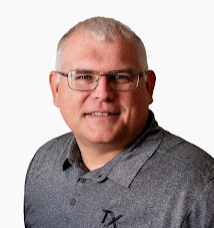

17 years across oilfield operations, completions engineering, and industrial sales — the reservoir-to-surface depth most power executives do not have.
| ResMetrics | MidContinent Sales Manager | Oct 2018 – Jun 2019 |
| EcoStim Energy Solutions | VP, Sales & Technology | Jan 2018 – Oct 2018 |
| Ely and Associates | Completions Engineering Consultant | Oct 2016 – Jan 2018 |
| PetroQuest Energy | Completions Engineer | Nov 2012 – Sep 2016 |
| Core Laboratories | Account Manager | Feb 2009 – Nov 2012 |
| Halliburton | Account Representative | Jan 2004 – Feb 2009 |
| Halliburton | Technical Service Representative | Jan 2002 – Jan 2004 |